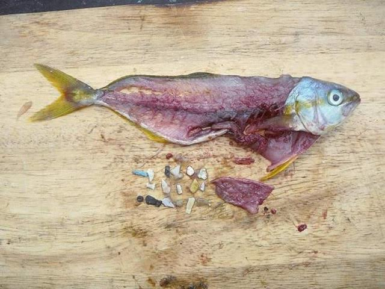
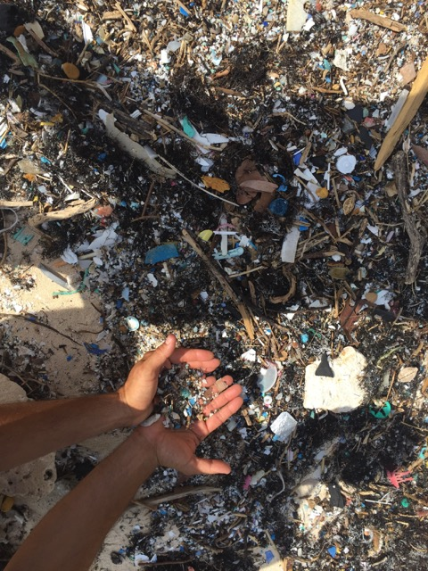

BIG PICTURE

Ocean “smog” from floating plastic debris is a huge problem. According to 5Gyres, there are 270,000 tons of it swirling around the world’s oceans in massive trash heaps. Fish, birds, and marine life eat the plastic debris and become entangled in it. Some of the plastic toxins they digest even make it up the food chain into the food many of us eat. That’s right—we’re eating the plastic trash, too. One study found that one-quarter of all fish sold in California markets had microplastics and fibers in their guts.
 Cleaning up the trash with some sort of floating, supersized garbage truck may sound like an obvious fix, but these vast islands of plastic trash—water bottles, straws, caps, food wrappers, bags, chunks of old, unrecognizable gadgets and toys—can’t just be collected and taken away. The disintegrating plastics permeate our oceans just like smog permeates our air. We can’t really filter it out. We have to stop the ocean smog at its source—us.
Here are ten things we can all do today to help clean up our oceans—courtesy of 5Gyres, a non-profit dedicated to empowering all of us to take action in response to this unhealthy scenario. We at Nordic Naturals ® are inspired, and proud to sponsor and support 5Gyres in spreading the word.
1. Swear off plastic bags. Stash some reusable bags in your car, or carry a backpack or tote bag with you.
2. Carry a reusable water bottle. Don’t buy bottled water—you can save $1400 a year by just drinking tap.
3. Say no to straws, or only use paper straws. When you order a drink, say “No straw, please.” Use non-plastic utensils and bring your own mug to the coffee shop. Get in the habit of carrying these with you when you’re out and about.
4. Wrap your sandwich in wax paper, or invest in some non-plastic food containers for packing your lunch.
5. Avoid all things Styrofoam. The chemicals used to create Styrofoam cups and food containers are toxic and possibly carcinogenic. Bad for you, bad for the oceans.
6. Buy items with minimal packaging, and buy in bulk whenever possible. Choose non-plastic beverage containers.
7. Minimize your electronic footprint by repairing, upgrading, or recycling old phones, TVs, computers, and peripherals.
 8. Buy clothes made from natural materials. Synthetic clothing items shed microfibers every time they’re washed, and these fibers wind up in the ocean.
9. Don’t buy face cleansers and scrubs that contain micro-beads (they’ll be phased out soon anyway, thanks to the Microbead-Free Waters Act).
10. Pledge to go #plasticfree for a day, a week, a year—or forever. Start by refusing the top five sources of single use plastic: plastic bags, water bottles, to-go containers, takeaway cups, and straws.
Cleaning up our oceans isn’t going to happen overnight. But we can all make a difference—one piece of plastic trash at a time.

By SARA YORK